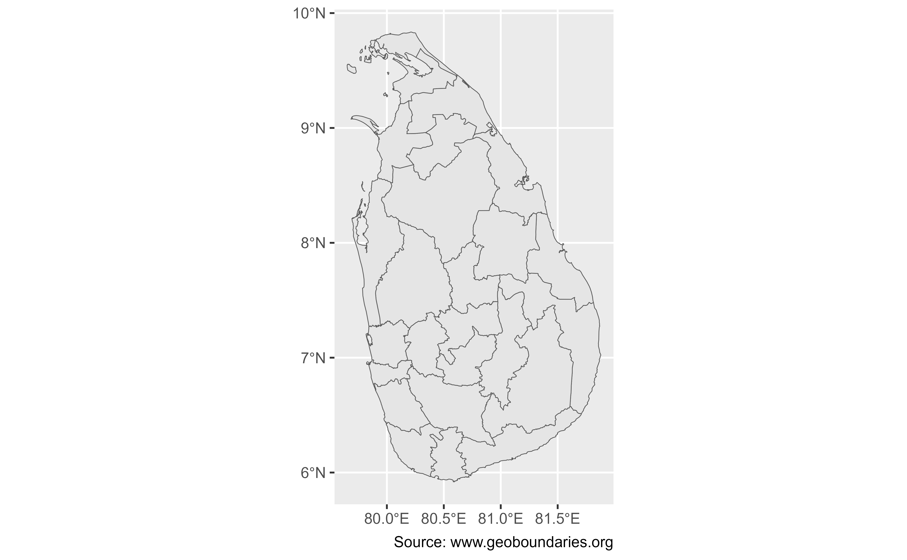

Attribution is required for all uses of this dataset.
This function returns data of individual countries "as they would represent themselves", with no special identification of disputed areas.
If you would prefer data that explicitly includes disputed areas, please use
gb_get_world().
Usage
gb_get(
country,
adm_lvl = "adm0",
simplified = FALSE,
release_type = c("gbOpen", "gbHumanitarian", "gbAuthoritative"),
quiet = TRUE,
overwrite = FALSE,
path = NULL
)Source
geoBoundaries API Service https://www.geoboundaries.org/api.html.
Arguments
- country
A character vector of country codes. It could be either
"all"(that would return the data for all countries), a vector of country names or ISO3 country codes. See alsocountrycode::countrycode().- adm_lvl
Type of boundary Accepted values are
"all"(all available boundaries) or the ADM level ("adm0"is the country boundary,"adm1"is the first level of sub national boundaries,"adm2"is the second level and so on. Upper case version ("ADM1") and the number of the level (1, 2, 3, 4, 5) and also accepted.- simplified
logical. Return the simplified boundary or not. The default
FALSEwould use the premier geoBoundaries release.- release_type
One of
"gbOpen","gbHumanitarian","gbAuthoritative". For most users, we suggest using"gbOpen"(the default), as it is CC-BY 4.0 compliant and can be used for most purposes so long as attribution is provided:- quiet
logical. If
TRUEsuppresses informational messages.- overwrite
logical. When set to
TRUEit would force a fresh download of the source.zipfile.- path
A path to a cache directory. If not set (the default
NULL), the data would be stored in the default cache directory (seegb_set_cache()). If no cache directory has been set, files would be stored in the temporary directory (seebase::tempdir()).
Value
A sf object.
Details
Individual data files in the geoBoundaries database are governed by the
license or licenses identified within the metadata for each respective
boundary (see gb_get_metadata(). Users using individual boundary files
from geoBoundaries should additionally ensure that they are citing the
sources provided in the metadata for each file. See Examples.
The following wrappers are also available:
gb_get_adm0()returns the country boundary.gb_get_adm1()returns first-level administration boundaries (e.g. States in the United States).gb_get_adm2()returns second-level administration boundaries (e.g. Counties in the United States).gb_get_adm3()returns third-level administration boundaries (e.g. towns or cities in some countries).gb_get_adm4()returns fourth-level administration boundaries.gb_get_adm5()returns fifth-level administration boundaries.
References
Runfola, D. et al. (2020) geoBoundaries: A global database of political administrative boundaries. PLoS ONE 15(4): e0231866. doi:10.1371/journal.pone.0231866 .
See also
Other API functions:
gb_get_adm,
gb_get_world()
Examples
# \donttest{
# Map level 2 in Sri Lanka
sri_lanka <- gb_get(
"Sri Lanka",
adm_lvl = 2,
simplified = TRUE
)
sri_lanka
#> Simple feature collection with 25 features and 5 fields
#> Geometry type: MULTIPOLYGON
#> Dimension: XY
#> Bounding box: xmin: 79.65102 ymin: 5.919017 xmax: 81.87896 ymax: 9.835791
#> Geodetic CRS: WGS 84
#> # A tibble: 25 × 6
#> shapeName shapeISO shapeID shapeGroup shapeType geometry
#> * <chr> <chr> <chr> <chr> <chr> <MULTIPOLYGON [°]>
#> 1 Jaffna Distr… LK-41 463711… LKA ADM2 (((79.7152 9.529465, 79.…
#> 2 Kilinochchi … LK-42 463711… LKA ADM2 (((80.01015 9.472403, 80…
#> 3 Mannar Distr… LK-43 463711… LKA ADM2 (((80.11535 9.209068, 80…
#> 4 Mullaitivu D… LK-45 463711… LKA ADM2 (((80.61353 9.456581, 80…
#> 5 Vavuniya Dis… LK-44 463711… LKA ADM2 (((80.23541 8.680412, 80…
#> 6 Galle Distri… LK-31 463711… LKA ADM2 (((79.98757 6.440352, 79…
#> 7 Hambantota D… LK-33 463711… LKA ADM2 (((80.67006 6.306029, 80…
#> 8 Matara Distr… LK-32 463711… LKA ADM2 (((80.3818 5.965264, 80.…
#> 9 Ampara Distr… LK-52 463711… LKA ADM2 (((81.70788 6.51073, 81.…
#> 10 Anuradhapura… LK-71 463711… LKA ADM2 (((80.03237 8.527211, 80…
#> # ℹ 15 more rows
library(ggplot2)
ggplot(sri_lanka) +
geom_sf() +
labs(caption = "Source: www.geoboundaries.org")

# }
# Metadata
library(dplyr)
#>
#> Attaching package: 'dplyr'
#> The following objects are masked from 'package:stats':
#>
#> filter, lag
#> The following objects are masked from 'package:base':
#>
#> intersect, setdiff, setequal, union
gb_get_metadata(
"Sri Lanka",
adm_lvl = 2
) %>%
# Check individual license
select(boundaryISO, boundaryType, licenseDetail, licenseSource) %>%
glimpse()
#> Rows: 1
#> Columns: 4
#> $ boundaryISO <chr> "LKA"
#> $ boundaryType <chr> "ADM2"
#> $ licenseDetail <chr> "Open Data Commons Open Database License 1.0"
#> $ licenseSource <chr> "www.openstreetmap.org/copyright"